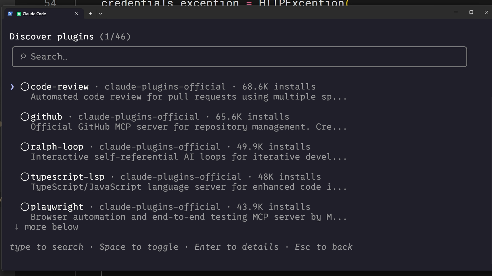
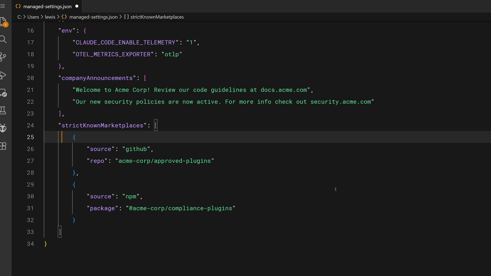
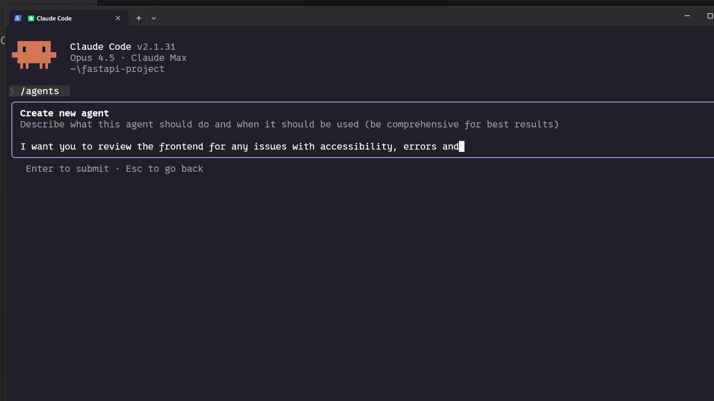

Как делиться skills
Чему научитесь
Около 20 минут
К концу урока вы сможете:
- отдать skill команде коммитом в репозиторий;
- раздать skill по нескольким проектам через плагин;
- понять, зачем организации корпоративный уровень;
- явно подключить skills к своему субагенту.
Один skill на всю команду
Видео, около 4 минут
Личный skill помогает вам. Тот же skill в репозитории выравнивает ревью у всей команды. Ролик разбирает три способа раздачи и ловушку: субагент ваши skills сам не видит.
Коротко
- Проектные skills в
.claude/skillsприезжают вместе сgit clone. - Плагин раздаёт skills между репозиториями, в том числе через маркетплейс.
- Корпоративные managed settings ставят skills всей организации и побеждают при конфликте имён. Это уровень для обязательных правил.
- Субагент не наследует skills разговора. Их перечисляют в поле
skillsего файла. - Встроенные агенты skills не получают. Только агенты, которые вы описали в
.claude/agents.
Коммит в репозиторий
Самый прямой путь: положить каталоги в .claude/skills и закоммитить. Кто клонирует репозиторий, получает skills без отдельной установки. Обновление приезжает со следующим git pull.
Так хорошо живут стандарты команды, сценарии этого конкретного репозитория и инструкции, которые ссылаются на его структуру. Рядом в .claude обычно лежат агенты, hooks и настройки — тоже под версионированием.
Плагин
Плагин — упаковка, которую ставят в разные проекты. Внутри у плагина каталог skills с той же идеей: папка на skill и SKILL.md внутри. После публикации в маркетплейс люди находят плагин и ставят его в свой Claude Code.
Это путь для skills, которые не привязаны к одному репозиторию: общий стиль коммитов компании, проверка доступности, шаблон ADR. То, что знает пути вашего монорепозитория, лучше оставить проектным skill.

Корпоративные настройки
Администратор может разложить skills на все машины организации. При одинаковом имени корпоративный skill перекрывает личный, проектный и плагинный.
Тот же файл настроек умеет ограничивать, откуда вообще можно ставить плагины:

managed-settings.json: организация разрешает плагины только из своих репозиториев."strictKnownMarketplaces": [
{
"source": "github",
"repo": "acme-corp/approved-plugins"
},
{
"source": "npm",
"package": "@acme-corp/compliance-plugins"
}
]
Сюда кладут то, что обязано быть одинаковым: безопасность, комплаенс, обязательный формат ревью. Ключевое слово — «обязано», а не «нам так удобнее».
Субагент skills не наследует
Делегированная задача стартует с чистого контекста. Три следствия:
- встроенные агенты (Explorer, Plan, Verify) skills не видят;
- ваш агент видит только перечисленные skills;
- они загружаются в момент старта субагента, а не по ходу, когда «тема подошла», как в основном чате.
Файл агента лежит в .claude/agents. Создать его можно командой /agents. Поле skills называет каталоги, которые уже должны существовать в .claude/skills:

/agents спрашивает, что агент должен делать. Skills к нему дописываются в frontmatter файла.--- name: frontend-security-accessibility-reviewer description: "Use this agent when you need to review frontend code for accessibility..." tools: Bash, Glob, Grep, Read, WebFetch, WebSearch, Skill model: sonnet color: blue skills: accessibility-audit, performance-check ---
Когда вы отдаёте работу этому агенту, оба skill уже загружены, и ревью идёт по ним без отдельной просьбы. Так удобно, если разным агентам нужны разные знания (фронт и бэкенд) и вы не хотите каждый раз дописывать это в промпт.
Вопросы к себе
- Ваш следующий skill нужен одному репозиторию, нескольким проектам или всей организации без права отказаться?
- Есть ли делегирование, где субагент каждый раз «забывает» чеклист? Какой файл агента и какие два skill это закрыли бы?
Дальше
Последний урок — что проверять, когда skill не срабатывает, не грузится, проигрывает другому имени или падает в рантайме.
Оригинал урока: Sharing skills